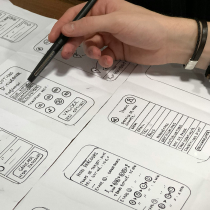

In the special section of the conference dedicated to featured talks, Rei Ayanami will present "Integrating AI into UX: Designing the Future." Her talk will explore how artificial intelligence (AI) is revolutionizing user experience (UX) design, showcasing examples of advanced recommendation systems and adaptive interfaces. Rei will discuss how these innovations improve user-interface interaction.

In the second part, Rei will address the ethical and practical challenges of combining AI and UX, such as data privacy and algorithmic bias. The talk will highlight the importance of transparent and ethical design. Attendees will gain a clear vision of how AI can enrich UX, while maintaining an ethical and safe approach. Rei promises to offer a unique perspective on the future of AI-influenced UX design.